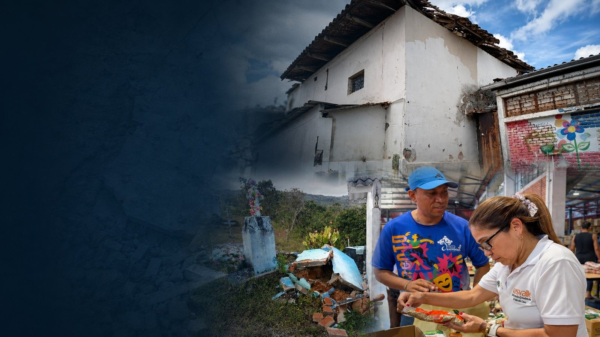
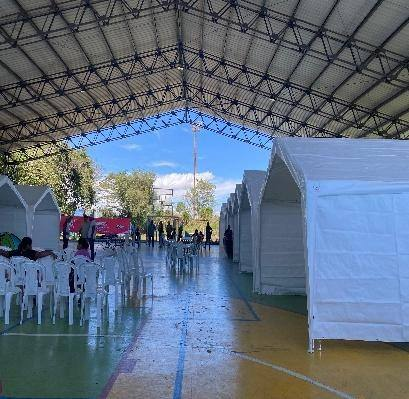
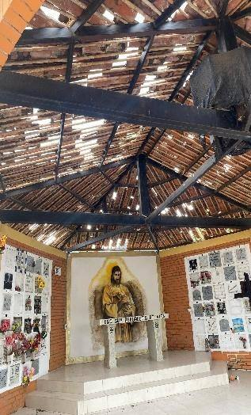
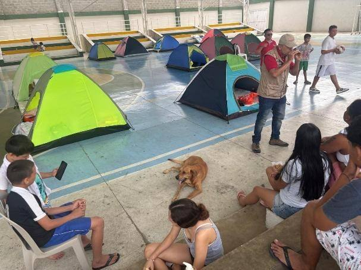
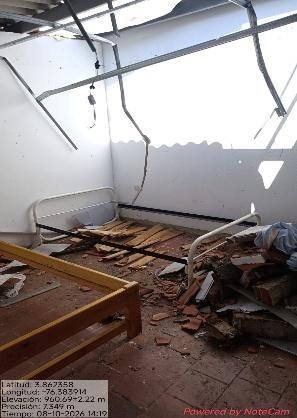
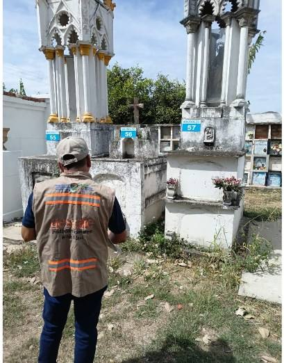
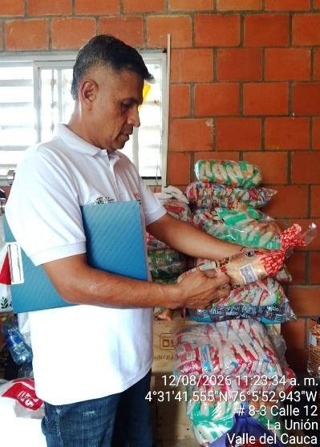
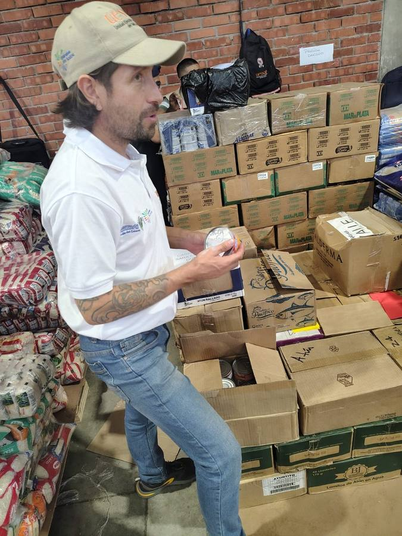

Respuesta
Sanitaria
Historia territorial de las acciones desarrolladas por UESVALLE después del evento sísmico del 10 de agosto de 2026.
Una emergencia sanitaria no se comprende con una sola cifra.
La respuesta combinó verificación de sistemas de abastecimiento, inspección sanitaria en lugares donde permanecía la población y apoyo sanitario a la operación humanitaria. Las fuentes no tienen la misma frecuencia; por eso la historia se organiza por fases e hitos verificables, no por una secuencia diaria artificial.
La respuesta se desplegó en los municipios de competencia UESVALLE.
El mapa cambia de lectura según la línea seleccionada. Pase el cursor o seleccione un municipio para revisar su síntesis.
Cobertura territorial UESVALLE
Identificar y priorizar
Convertir reportes dispersos en información sanitaria trazable y territorial.
De la información inicial a una lectura operativa.
El tablero integrador mantiene separadas las unidades de análisis: sistemas de agua, registros EIS, cementerios, sedes educativas, seguimientos y despachos no se suman entre sí como un único total.
Verificar e intervenir
Tres líneas de operación, una misma lectura territorial.
Del reporte municipal al diagnóstico del sistema.
La lectura integrada identifica sistemas con estado documentado, antecedentes de afectación y restablecimientos explícitos. El formulario vigente aporta una segunda capa con diagnóstico individual, necesidades y evidencia fotográfica.
Sistemas documentados y afectaciones por municipio
La intensidad combina sistemas con estado documentado y afectaciones registradas. No representa un índice de calidad del agua.
La afectación se muestra directamente, no como un anexo.
Los casos siguientes combinan diagnóstico, estado operativo, componente afectado y fotografías incorporadas desde la carpeta institucional FotosAcueductos.
Ver otros diagnósticos destacados
La vigilancia se desplazó hacia los lugares donde permanecía la población.
Albergues, cementerios, instituciones educativas y establecimientos de protección al adulto mayor concentraron inspecciones, recomendaciones y medidas preventivas.
Lectura de actividad: se muestran por separado albergues, cementerios, instituciones educativas y establecimientos de protección al adulto mayor. No se suman como una única unidad de intervención.
Actuaciones directas y establecimientos priorizados
La fuente PIC/Gobernación se mantiene como complemento de priorización y no se atribuye como visita directa UESVALLE.
Las fotografías dejan de ser anexos: hacen parte de la evidencia.
Seleccione una imagen para ampliarla.






La logística fue departamental; el aporte de UESVALLE fue sanitario.
La historia se concentra en lo que corresponde a UESVALLE: revisión visible, empaques, vencimientos, clasificación, organización y condiciones de almacenamiento antes de la distribución.

Control sanitario dentro de una operación humanitaria de gran escala.
Las cifras logísticas contextualizan la magnitud; no se presentan como una actividad ejecutada exclusivamente por UESVALLE.
La respuesta se fortaleció conectando capacidades.
Seguimiento y recuperación
La atención continúa al verificar normalizaciones, documentar necesidades y articular apoyos.
La evolución se muestra cuando existe soporte documental.
No se inventa una frecuencia diaria. Las fechas funcionan como hitos dentro de las fases.
Después de entender la historia, es posible profundizar.
La vista analítica conserva filtros territoriales y mantiene separadas las unidades de análisis.
Qué significa cada cifra importa tanto como la cifra.
Cortes diferenciados. Agua, EIS y ayuda humanitaria conservan la fecha propia de su fuente.
Unidades no aditivas. Sistemas, registros EIS, cementerios, sedes educativas, seguimientos y despachos no se suman entre sí.
Datos posteriores al corte. Los diagnósticos recientes se presentan como una capa de profundización y no como suma automática al consolidado EDAN.
Evidencia. Las fotografías incluidas se sirven localmente dentro del paquete para asegurar su despliegue durante la presentación.